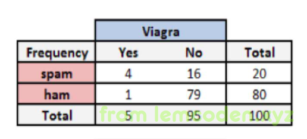
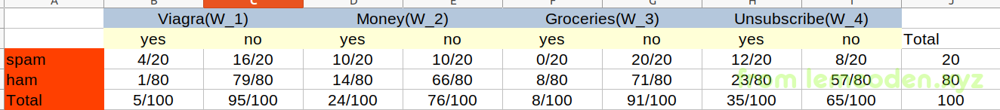
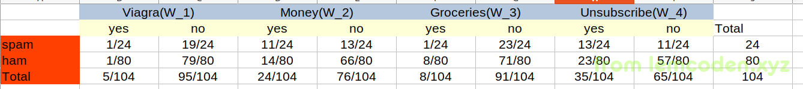
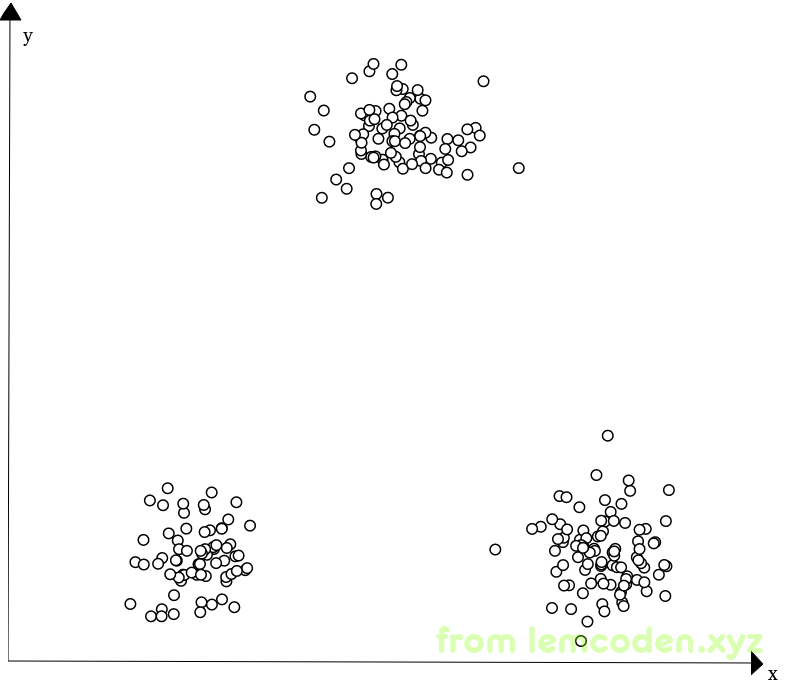
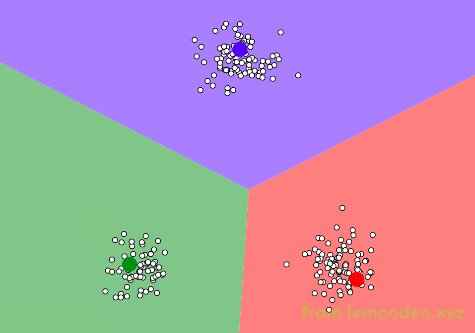
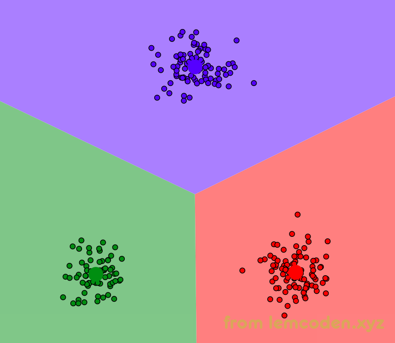
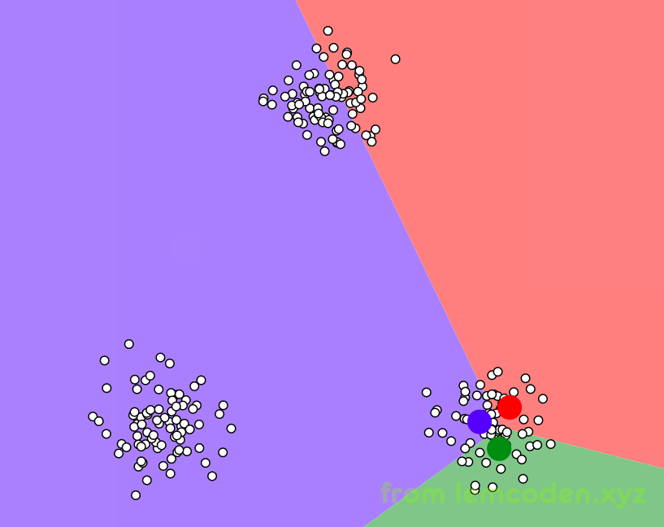
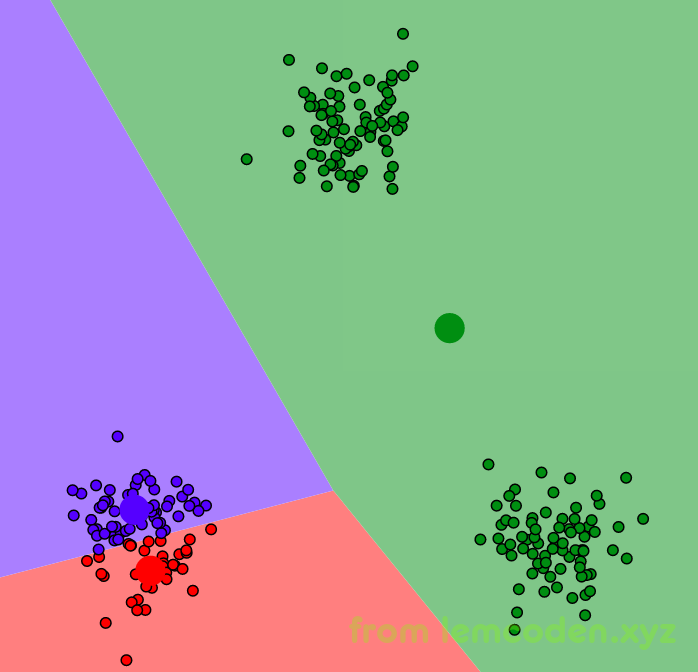
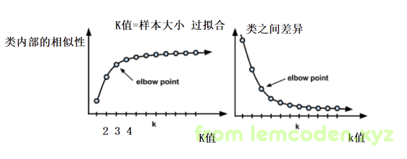

机械学习算法入门02
贝叶斯分类算法
一种先验概率计算后验概率的算法,什么是先验概率,啥是后验概率?
emmmmm,先走起来再找路,我先给出公式,然后再慢慢解释
首先一个简单的问题,帮我们推导一下这个公式结果,
一所学校里面60%的男生,40%的女生.男生总是穿长裤,女生则一半穿长裤一半穿裙子
-
迎面走来一个人,这个人是男生的概率? %60 (这叫正向概率)
-
迎面走来一人,你高度近视,看不清楚男女,但是知道这个人穿的长裤,那么这个人是女生的概率 (这叫逆向概率)
第一个问题,通过统计可以直接的出,但第二个不能直接统计,而是根据已有的统计数据计算出来的
其解题思路如下 :
(假设学生总数为U)
计算出学校有多少人穿长裤
女生中,在总人数中穿长裤的人数
穿长裤中女生的概率就是
女生的概率*女生中穿长裤的概率/总数中穿长裤的概率
最后计算得出穿长裤情况下是女生的概率为0.25.
如果我们把女生替换成A,把长裤替换为B,公式如下
这就是我们的贝叶斯公式,等号前面为后验概率,后面为先验概率
贝叶斯公式有很多相关的应用,比如接下来要聊的
通过验证邮件里的关键字来计算是垃圾邮件的概率.
比如说我们经过统计,邮件数据如下

总共一百封邮件
spam => 垃圾邮件
ham => 正常邮件
Viagra => 伟哥
我们可以计算出,
关键词出现的概率 P(Viagra)=5/100=0.05
垃圾邮件的概率P(spam)=20/100=0.2
垃圾邮件下关键词的概率P(Viagra|spam)=4/20=0.2
那么关键词出现情况下垃圾邮件的概率为
最后计算得出垃圾邮件的概率为0.8
这是一个简单的应用,如果邮件当中有多个关键字怎么计算呢?
比如说一封邮件当中有四个关键字,viagra,money,groceries,unsubscribe,以下是四个关键字的统计数据:

有了这样的数据,我们就可以计算出任意关键字出现的概率,不过中间有些坑需要解决.
首先我们计算一下W_1和W_4(关键字太长,用括号里的代号代指)出现后是垃圾邮件的概率,那么就将概率代入到公式当中,不过有个坑就是我们W_1和W_4出现了,我们是否要把非W_2和非W_3的概率一起代入到公式的当中…
这个是当然的了,计算概率最需要的就是把所有的情况都考虑完全.
所以这样的话,我们的公式应该长这样子
然后问题又来了,我们这部分应该如何计算
即,同时发生W1非W2非W3和W4的概率
其实,在贝叶斯算法中我们可以假设这四个是独立事件,所以直接概率相乘即可,这是贝叶斯公式的优点,也是贝叶斯的缺点(不准确,可能独立事件之间有联系)
那上面的分母我们也可以这么拆开
所以我们可以通过算法计算出
的概率
,转换一下思想我们可以还可以通过算出
即正常邮件的中这种情况出现的概率,两者相除将分母约掉,来减少我们假设的独立事件对我们整个概率计算的影响
即,设W1,非W2,非W3和W4同时出现,垃圾邮件出现的概率为x,正常邮件出现的概率为y,
则会得出x+y=1,而通过x/y计算两者的分子得出值,两者的分子计算得出分别是0.012和0.002
即
即垃圾邮件的概率为0.857
还有一个问题就是,假如我计算四个关键字都出现的概率,代入公式会发现,W3垃圾邮件出现的概率为0,那么代入公式后整个公式也会为0,这和我们的直接经验都不相符,那如何去解决呢?
我们可以使用拉普拉斯平滑定理,在我们目前的零概率事件,根据经验认为的给出一些数据
就像现在这种情况,我们多给出四封垃圾邮件,每封邮件各包含一个关键字,我们的数据就变成了这样

这样我们就可以通过贝叶斯分类器进行计算了
KNN算法(K近邻)
我们直接上概念:
如果一个样本在特征空间中的k个最相似的样本中的大多数属于某一个类别,则该样本也属于这个类别
- 计算预测的样本与空间中所有样本的距离
- 去除与当前样本距离最近的K个样本
- 统计这个K样本中,大部分属于哪一个类别
- 大部分属于哪一个类别,那么这个就可以预测出属于这个类别
其中我们的距离就有很多的概念,例如:
-
经典的欧式距离,取空间中两个点的值线距离,公式如下
-
平方欧式距离
-
曼哈顿距离(曼哈顿这个城市没有斜向的路,地图上看就像围棋格一样,所以计算两点的距离,直接去xy差的绝对值相加),公式如下
-
余弦距离(常应用于文本相似度)
-
闵科夫基距离 对一组距离的定义
案例
我们通过一个案例来解释K近邻算法,
这是我们的数据,这是一个女生所约会男生的数据
1 | 40920 8.326976 0.953952 3 |
数据当中,第一列约会男生的每年的飞行公里数,第二列表示约会男生的玩游戏的时间占工作时间的比例,第三列表示每周吃甜品的克数
最后表示女生的感觉分别是:“没感觉”,“看着还行”,“极具魅力”
首先我们看这些数据有一个特点,他们之间的数值差距很大,飞行公里数上千,但是玩游戏时间占比最多到13,15这样子,所以在我们进行计算的时候,有个问题就是,我们计算距离的时候,三列计算出来的距离的数据差异很大,
所以我们要对数据进行归一化,即将数据范围缩小到0到1之间,我们先使用最简单的,最大最小值归一化
求出数据中的最大最小值,将所有数据减去最小值再除以最大最小值差值,以此来完成归一化
当然最大最小值归一化,有一个缺点就是如果有离群值,就会导致归一化的数据分布不均匀,抗噪声能力差.
归一化数据如下
1 | [0.44832535 0.39805139 0.56233353] |
之后如果来了新的数据,我们将数据进行归一化后,计算特征的欧式距离,什么?你还不会算?这样子,我们将这三列特征分别命名为x,y,z
然后新进来一条数据,我们将它与所有数据的特征进行距离的计算,公式就是这样
计算出所有数据的距离后,我们定一个K值,比如说4,我们找与新进来数据距离最小的四个点,看它的标签属于1,2,3哪个类别,找出数量最多的类别,我们就把这条数据分到这类.
K近邻算法有一个问题,这个问题就是
假如我们全量的数据总共有三类,A类数目众多,B类C类很少,那我们我们来一条数据大概率就会被划分到A类,那么我们A会被划分的越来越多,类别数据会越来越倾斜,这种问题怎么解决?
可以分配权重,最终由数量乘以权重来划分,比如A类最多,我们就给它设置一个最小的权重
最后我们使用KNN算法要谨记的一点就是,我们的数据是什么样的,我们的模型就是什么样,如果我们输入一堆描述字母的数据,那我们的模型就可以识别字母,但它识别不了数字,中文.所以在应用算法的时候注意训练的数据源.
K-Means算法
K-Means是属于聚类算法的一种,前面我们聊的线型回归,贝叶斯,KNN算法都是分类算法,而K-Means算法是属于聚类算法.
是给数据分出一个本来没有的类别,寻找个体之间的一些潜在的相似模式.
聚类算法我们不需要提前告知所划分的组应该是什么样的.因为我们甚至都可能不知道我们再寻找什么,所以聚类是用于知识发现而不是预测
官方话就说到这里,我们举一个通俗的例子,假如我们的数据如下:

我们看到三堆数据应该很好的能分成三类,但是如何通过算法实际的找出他们的边界呢?
首先我们随机选取三个中心点

像上面这样,然后计算所有周围数据到中心点的距离,将距离近的N个点分为这个中心点的类别,比如绿色区域内的点,到绿点的距离近,我们就把他分为绿类
分好类的之后,可能我们分的类效果不好,因为第一次是随机选择的中心点,
所以我们会计算同一类里所有点的之间的距离,取所有距离的平均数,根据这个距离平均数重新选择中心点,这个可能是一个虚的中心点,也就是很大可能不与原有样本的坐标重合
新的中心点选好后,我们将新的中心点与就中心点对比,坐标没重合,如果没有重合,再进行最近距离分类
重复以上两个步骤,直到我们的新的中心点与上一次中心点坐标重合为止,最后数据分好类就像下面这样

但是有两个问题,
-
我们举出的这个例子,中心点的数量是先定下来的,实际k-means算法是人工输入的,我们的点的维度不可能只有二维这么简单,可能有四维,六维,甚至十几个维度,这样点我们根本无法用坐标系表示,那么我们在如何不知道数据全貌的情况下选取数据的数量呢?
-
点的坐标是随机的,如果我随机选择的一些点坐标正好在同一类里,那么可能分类效果不理想,比如说这样

分类出来的效果就像下面

首先我们说第二个问题,关于k-means随机点可能分到一类的问题,换个说法应该就是选取的随机点之间的距离可能很近.对,距离太近导致随机点可能被选到一个类别里面,那么我们让随机生成的点变的远一点不就可以了?
于是有了k-means算法,k-means算法就是这样,第一个中心点是随机选取的,但是第二个点,会尽可能的将其放到距离第一个点远的地方.之后每次选点都会选择比原来那些点尽量远的距离
那么第一个问题,在不知道数据什么样子的情况下,怎么知道选取多少个中心点,才能保证聚类的效果比较好呢?
首先,聚类效果怎么才算好,有两个标准:
- 类与类之间的差异很大
- 类内部的相似性很高
既然有标准,那么我们就可以统计出来K值(k-means的k就是指中心点的数量,或者分类的数量)和聚类效果的统计图,就像下面这样

这样一个类内部相似性和类之间的差异就出来了,看到这里我们会发现,k的数量越多,分类效果越好,那我们能不能有多少条数据就分多少类呢?
当然不行,抛开数据计算量极大不说, k数量越多,就越有总结,汇总的那个味道,而不是摸索出规律了,也就是我们所说的过拟合了,所以我们一般用到收益衰减大幅下降的一个值,在我们统计图中也就是3或4这个值,因为这个统计图选取点的地方很像我们的胳膊肘的部分,所以又叫肘部法
案例–微博精准营销
上面我们聊了k-means聚类算法的实现步骤,下面我们来应用一下k-means算法
假如你是九阳豆浆机的营销员,那么需要我们豆浆机推给相关微博的用户,我们把近期所有带九阳这个词的微博都收集起来,数据就像下面这样
1 | 3794122458250724 元旦快乐@初见花妖娆 @九阳 @灵珊妹子 @潞亼曱 @喵喵铱 @杉菜1991 @天天小熊0307 @仙仙当妈了 @小1妈妈 @小米渣渣ye @轩仔娘66 @777xu @2012年1103 http://t.cn/RZ45gP7 |
前面是用户ID,后面是九阳微博的具体内容,我们会发现,有些九阳是被@的用户名,有的是公司名做投资的.我们不可能一条条的去看,去理解主旨.
那么,我们可以用聚类算法,我们们将这些微博的数据主旨一致的聚到一个类别当中,然后我们只要看每个类别的第一条微博,就知道这整个类别的主旨了.k-means在这个方向的应用有了,我们还有个问题就是,
这是一串串字符串,我们怎么将这些做成可以代入我们算法的向量
我们可以做一个词集,将微博中所有的词映射到这个词袋向量中,举个例子,比如说我们对微博文章进行分词之后,变成这样
1 | I love her but she don't love me. |
分词去重之后,我们将所有的词向量化,形成一个词表,每位的数字代表词出现的次数
1 | [I,love,her,but,she,don't,me,and,too] |
然后我们就可以将数据向量化
1 | I love her,but she don't love me. |
所以词袋模型就是将我们的所有文章词组成一个词表,根据词表的索引位映射,这位词有为1,没有为0
,然后我们就可以将向量化的数据代入到k-means算法里,
但是我们的词集模型依然有问题,因为我们每个词的词性是不一样的,有些词,词性很轻比如,的,得,啊等这些冠词或语气词,他们对代表文章或段落的主旨的比重很低,所以我们不能单纯的使用词集模型就可以直接代入.
词集与词袋模型不同之处在于,词集不仅用数字表示词汇是否有,还用数字表示这个词出现的频率
比如,上面词袋的第二句话变成
1 | [1,2,1,0,1,0,1,1,1] |
但是好像并没有给我们的词有一个均衡的重要性的配比,词的使用率高并不能代表词就很重要,能代表主旨,就像我们每篇文章都有很多"的"这个词,但是对代表主旨并没有什么意义
所以我们的TF-IDF算法就出来了
我们可以这样想,假如一个词在其他的所有文章出现的频率很低,但是在自己的文章的词的频率很高,这个词就越能代表我们的文章主旨
我们TF-IDF算法就是遵循这样的思想,其中TF即我们的词频公式如下
而IDF即逆文本频率指数,如下,该值越大,代表本文主旨的权重就越大
而TF-IDF,即TF*IDF,对两值相乘,来作为我们词的最终权重,这就是要做的特征工程
这样我们就能代入算法进行模型的训练,和聚类了.